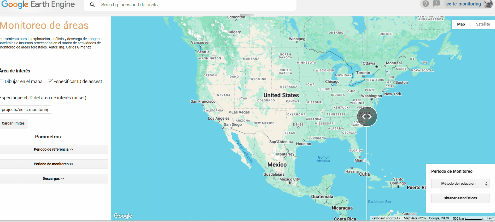

Google Earth Engine Apps
Image selection and monitoring App:
To the App Land use and landcover classification results for the Parguayan Chaco in 2014 and 2019:
To the App
Land use and landcover classification results for the Acre state, Brazil:
To the App
Sentinel 2 image processing App:
To the App